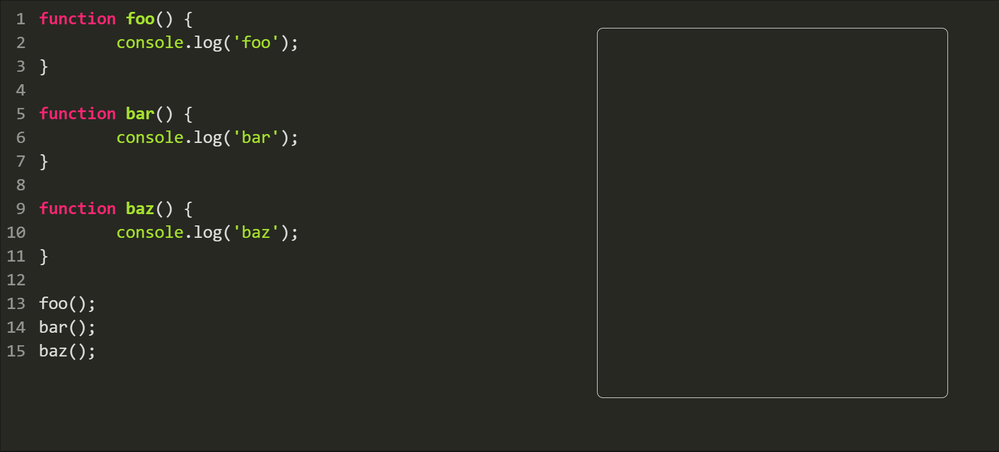
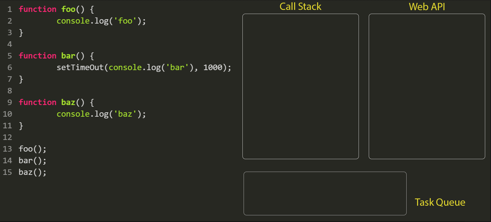
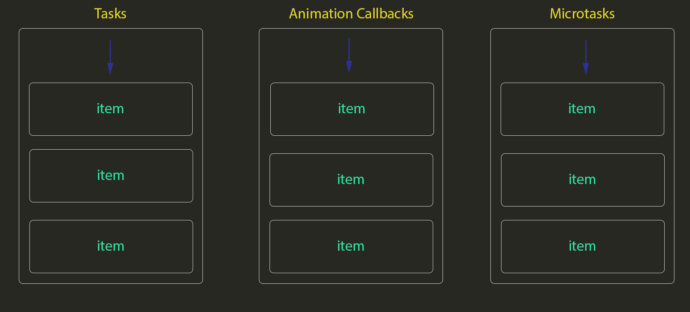
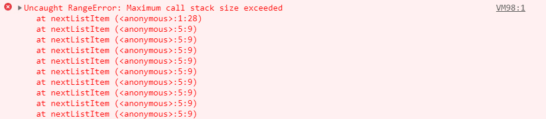

Event Loop
JS is single-threaded
One piece of code at a time
Every function call is added to the call stack
Call Stack
Nested Call Stack

Why this approach doesn't always work?
Problems
- May take a long time to execute
- Any task running blocks any interaction with the web-browser (blocking script)
- Affects the user experience
Time-consuming operations
- Web requests
- Image requests
- Processing a lot of data
not really...
Asynchronous calls
Uses runtime environment
Browser (WEB APIs)
- DOM Events (click, etc)
- XMLHttpRequests(AJAX)
- Timers(setTimeout(), setInterval())
Node.js
- C/C++ APIs
- Libraries
Web APIs
Queues
Different priorities (up to the browser)
3 categories of queques to handle async calls
- Tasks
- Animation Callbacks
- Microtasks
1 - Tasks
- DOM events (higher priority usually)
- setTimeout()
- setInterval()
2 - Animation callbacks
- requestAnimationFrame()
- Page resize and other events affecting the display
- GIF rendering
Micro-tasks
Mostly promises
The 3 queues
So what does the event loop actually do?
The event loop

Event loop iteration (tick)
while(appIsRunning) {
while (microtasksQueue.hasTasks()) {
doTask(microTask);
}
if (taskQueue.hasTasks()) {
currentTask = taskQueue.shift();
doTask(currentTask);
}
if (animationQueue.hastasks()) {
currentTasks = animationQueue;
for (e in currentTasks) {
doTask(e);
}
render();
}
}
The event loop

Code
The classic
const bar = () => console.log('bar')
const baz = () => console.log('baz')
const foo = () => {
console.log('foo')
setTimeout(bar, 0)
baz()
}
foo()
And the output is...
//foo
//baz
//bar
A little trickier example
console.log('Script start');
setTimeout(() => {
console.log('setTimeout');
}, 0);
new Promise((resolve, reject) => {
resolve('Promise resolved');
}).then(res => console.log(res))
.catch(err => console.log(err));
console.log('Script End');
...wait for it...
//Script start
//Script End
//Promise resolved
//setTimeout
Another example
const nextListItem = function(item) {
item.doSomething()
if (item) {
nextListItem();
}
};
If the array is too large, we may not be able to process all the elements
Use of async
const nextListItem = function(item) {
item.doSomething();
if (item) {
setTimeOut(nextListItem, 0);
}
};
The recursion is handled by the task queue, not the call stack!
Cool! We could do the same with a promise, right?
const nextListItem = function(item) {
item.doSomething();
if (item) {
Promise.resolve()
.then(nextListItem);
}
};